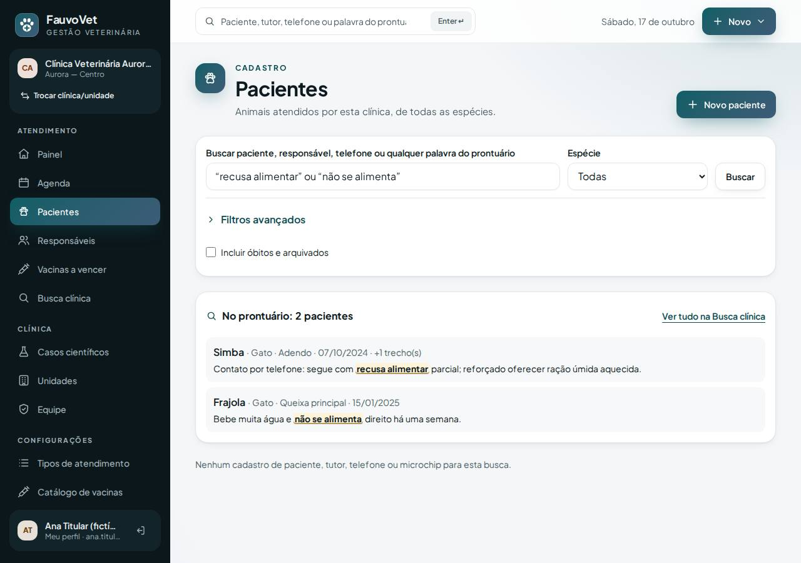
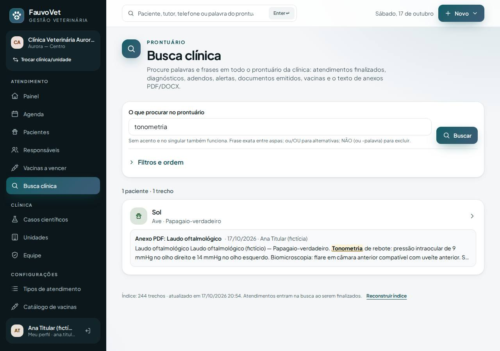
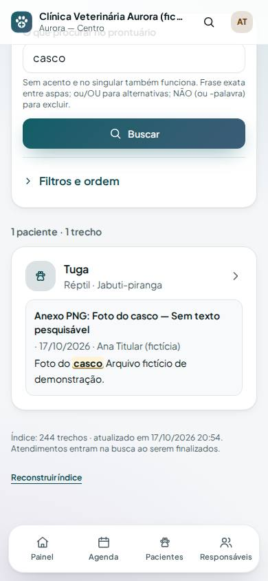

Correção dos exemplos da busca e busca dentro de anexos PDF/DOCX
ID: 2026-10-19-busca-anexos · Data: 19/10/2026 · Versão: 0.14.0 · Módulo: Fase 2 — Busca clínica (ADR-017, ADR-018) · Estado: implementado e testado localmente; publicação única a cargo do proprietário (seção 7)
1. Objetivo e análise do problema relatado
Relato do proprietário: na produção não funcionaram:
- a busca por
xampu; “recusa alimentar” OU “não se alimenta”;- o filtro "Diagnóstico ou código" com os exemplos.
O pedido é uma busca livre por palavras.
O que foi verificado
- A Busca clínica estava publicada. No servidor,
/fauvovet/buscapede login, enquanto um endereço inexistente responde 404. - Causa principal: a demonstração era de uma versão anterior. Ela foi carregada na entrega anterior, antes de existirem os textos de exemplo:
- na versão antiga não existe nenhuma ocorrência de "xampu", "recusa alimentar", "não se alimenta", "uveíte" ou "penicilina" (conferido no código da versão
bc41bf8); - o sistema não avisava que a demonstração estava desatualizada, e o passo "remover e carregar de novo" ficava escondido num aviso do guia.
- na versão antiga não existe nenhuma ocorrência de "xampu", "recusa alimentar", "não se alimenta", "uveíte" ou "penicilina" (conferido no código da versão
- Causas que agravavam:
- a busca principal de Pacientes (e a do topo) só procurava nome, tutor, telefone e microchip; a busca no prontuário estava num menu separado, "Busca clínica" (no celular, em "Mais opções");
- o filtro "Diagnóstico ou código" exigia a frase inteira na mesma ordem e não aceitava plural (
dermatites atopicasfalhava); além disso, ele só olha nomes de diagnóstico, não textos como "recusa alimentar"; - aspas curvas (“ ”), que o celular e o Word colocam sozinhos, e o "ou" minúsculo não eram reconhecidos como operadores.
Solução nesta publicação
- Campo único de busca: para a equipe clínica, a busca de Pacientes e a busca do topo também procuram no prontuário e mostram o bloco "No prontuário: N pacientes", com o trecho destacado.
- Aspas curvas e "ou" minúsculo funcionam:
“recusa alimentar” ou “não se alimenta”. - Filtro de diagnóstico por palavras: em qualquer ordem, sem acento e no plural (
dermatites atopicas,atopica dermatiteeL20encontram "Dermatite atópica"). - Demonstração com versão: a tela avisa "Demonstração desatualizada" e tem o botão Atualizar demonstração, que remove e carrega de novo num clique. A Busca clínica também avisa.
- Teste de regressão que reproduz exatamente o cenário da produção: demonstração antiga → aviso → atualizar → exemplos funcionando.
Próximo passo, na mesma publicação: texto de anexos
O texto de PDF e DOCX anexados passa a ser lido e entra na busca (exemplos 4 e 10 do CLAUDE.md §3.3). Imagens aparecem como "Sem texto pesquisável".



2. O que mudou
- Pacientes / busca do topo (equipe clínica): o mesmo termo procura no cadastro e no prontuário. Aparecem até 5 pacientes com trecho, e o link Ver tudo na Busca clínica leva aos demais. Recepção continua vendo só o cadastro.
- Operadores: aspas retas ou curvas;
ou/OUsepara alternativas;NÃOou-palavraexclui. - Diagnóstico ou código: busca palavra por palavra. A dica do campo explica que palavras do prontuário vão na busca principal.
- Anexos com texto:
- ao enviar PDF ou DOCX, o sistema lê o texto. O original não muda; o texto lido fica guardado à parte;
- cada anexo mostra uma etiqueta: Texto pesquisável na Busca clínica, Sem texto pesquisável (imagem / PDF digitalizado?), Não foi possível ler o texto ou Grande demais (acima de 10 MB);
- na Busca clínica, o resultado mostra "Anexo PDF: título" e o trecho do arquivo. O filtro Onde procurar → Anexo (texto extraído) limita a busca aos anexos. Remover o anexo tira o texto da busca;
- anexos enviados antes desta versão: são lidos em lotes de 30 ao abrir a Busca clínica pela primeira vez. Se sobrar algum, aparece o botão Ler anexos pendentes;
- OCR de imagens e PDFs escaneados não está incluído; eles ficam marcados como "sem texto pesquisável".
- Demonstração (versão 3):
- laudo oftalmológico em PDF do papagaio Sol: "tonometria", "flare", "clamidiose" só existem dentro do arquivo;
- sorologia em DOCX do coelho Floco: "Encephalitozoon cuniculi";
- foto PNG do casco da jabuti Tuga, sem texto;
- novos atalhos na tela.
- Arquivos:
- migração
2026_10_19_000002_add_extracted_text_to_attachments; app/Files/TextExtractor.php,AttachmentService,ClinicalSearchIndex(versão 2: reconstrói sozinho),ClinicalSearchService,SearchText,PatientSearch,PatientController,DemoDataServiceeDemoDataController;- views
patients/index,search/index,attachments/_panelesettings/demo-data; - rotas
POST /busca/anexosePOST /configuracoes/dados-de-demonstracao/atualizar; - diagnóstico de deploy mostra
zip_archive(opcional).
- migração
- Dependência nova:
smalot/pdfparser2.13 (PHP puro, cerca de 500 KB, licença LGPL-3.0 usada sem modificação; requer as extensõeszlibeiconv, já presentes). O DOCX é lido sem precisar da extensãozip. ADR-018.
3. Pré-requisitos
Os mesmos das entregas anteriores. A nova biblioteca já vai dentro do pacote (vendor); nada para instalar no servidor.
Git Bash/macOS: NOT RUN.
4. Passo a passo (no seu computador)
- Terminal
cd ~/code/fauvovet→git pull --ff-only→pnpm bootstrap(instala a biblioteca nova) →pnpm db:start→pnpm db:migrate(1 migração nova). - Terminal
pnpm dev→ entre como titular → Configurações → Dados de demonstração. Se aparecer "Demonstração desatualizada", clique em Atualizar demonstração.
5. Como testar
pnpm verify --e2e
pnpm test:tenant-isolation- Regressão do relato:
DemoDataTest::test_demo_antiga_avisa_e_atualiza_e_exemplos_do_guia_funcionamsimula a demonstração antiga, confere o aviso, atualiza e testaxampu, as duas formas de “recusa alimentar” ou/OU “não se alimenta” (aspas curvas), o campo de Pacientes, o diagnóstico por palavras e os anexos. - Anexos:
AttachmentSearchTestcobre extrator (PDF, DOCX, imagem, arquivo corrompido, grande demais), laudo de ave (exemplo 4), imagem sem texto (exemplo 10), remoção, pendentes e isolamento A/B.
Confirmar o funcionamento com os dados de demonstração
Faça na produção, depois de publicar (seção 7), com o usuário titular. Cada passo diz o que deve aparecer.
- Navegador Configurações → Dados de demonstração.
- Deve aparecer: a faixa amarela Demonstração desatualizada (versão 1; a atual é 3) e o botão Atualizar demonstração. É exatamente o que causou o problema relatado.
- Clique em Atualizar demonstração. Deve aparecer: "Demonstração atualizada: 22 pacientes, 33 atendimentos, 3 anexos e 3 casos científicos", e a faixa amarela some.
- Se a tela mostrar "Nenhum dado de demonstração", clique em Carregar demonstração.
- xampu pela busca principal: menu Pacientes → no campo "Buscar paciente, responsável, telefone ou qualquer palavra do prontuário", digite
xampu→ Buscar.- Deve aparecer: o bloco No prontuário: 1 paciente, com Bento · Adendo e o trecho "…banho com xampu comum…".
- Abaixo: "Nenhum cadastro de paciente… para esta busca" (ninguém se chama xampu).
- Frases alternativas, do jeito que você digitou: no mesmo campo,
“recusa alimentar” ou “não se alimenta”(aspas curvas e "ou" minúsculo valem).- Deve aparecer: No prontuário: 2 pacientes, Simba ("…segue com recusa alimentar…", +1 trecho) e Frajola ("…água e não se alimenta direito…").
- Clique em Ver tudo na Busca clínica: a mesma busca, com todos os trechos.
- Busca do topo (computador): no campo do topo ("Paciente, tutor, telefone ou palavra do prontuário…"), digite
uveíte+ Enter. Deve aparecer: Sol, papagaio. - Filtro de diagnóstico por palavras: Pacientes → Filtros avançados → Diagnóstico ou código:
dermatites atopicas→ Aplicar filtros.- Deve aparecer: Bento, Luna, Zeus, Kiara (e Pipoca, com dermatite descartada, só se a situação incluir descartados), cada um com os selos Suspeita/Confirmado.
- Teste também
L20(código): mesmo resultado.
- Texto dentro do PDF anexado: Configurações → Dados de demonstração → atalho Busca clínica: “tonometria”.
- Deve aparecer: Sol, com "Anexo PDF: Laudo oftalmológico" e o trecho "Tonometria de rebote: pressão intraocular de 9 mmHg…".
- Abra o Sol (clique no nome) → bloco Anexos: o laudo tem a etiqueta verde Texto pesquisável na Busca clínica; Baixar abre o PDF original.
- Texto dentro do DOCX: atalho “encephalitozoon”. Deve aparecer: Floco (coelho), "Anexo DOCX: Sorologia — resultado do laboratório".
- Se o servidor não tiver a extensão
zip, a demonstração não cria esse DOCX (odiagnosticomostrazip_archive: false). Envio e leitura de DOCX continuam funcionando normalmente.
- Se o servidor não tiver a extensão
- Imagem sem texto: Busca clínica →
casco. Deve aparecer: Tuga, "Anexo PNG: Foto do casco — Sem texto pesquisável". Na ficha da Tuga, a etiqueta cinza é Sem texto pesquisável (imagem). - Seu próprio anexo: abra qualquer paciente demo → Anexos → envie um PDF com texto (por exemplo, um PDF salvo do Word). Deve aparecer a etiqueta verde; na Busca clínica, uma palavra do arquivo encontra o paciente.
- Um PDF escaneado (só imagem) fica "Sem texto pesquisável (PDF digitalizado?)".
- Anexos antigos: se você já tinha enviado anexos antes desta versão, a primeira abertura da Busca clínica lê até 30. Se sobrar, aparece "N anexos… ainda não tiveram o texto lido" e o botão Ler anexos pendentes.
6. Performance e usabilidade
- Busca (local, WSL, seed + demonstração ≈ 244 trechos; 30 requisições entre Busca clínica e Pacientes com prontuário): p50 35–39 ms, p95 46–50 ms, máx. 60 ms.
- Demonstração: remover ~0,3 s; carregar ~0,5–0,6 s (inclui gerar o PDF e ler os 3 anexos).
- Leitura de anexo: acontece no envio. PDFs comuns levam décimos de segundo; o limite de 10 MB evita travar o envio. PDFs muito grandes ficam "Grande demais para ler o texto". Medição com PDFs reais grandes: NOT RUN.
- Celular: o bloco "No prontuário" aparece antes da lista de cadastro; axe sem violações em Pacientes com prontuário e na busca de anexo sem texto.
7. Publicação única na Locaweb
Leva tudo o que ainda não estiver no servidor: vacinação, busca avançada, casos, demonstração, busca clínica e esta correção com anexos.
- Terminal
cd ~/code/fauvovet→git pull --ff-only→pnpm bootstrap→pnpm db:start→pnpm verify --e2e→pnpm deploy:package→pnpm deploy:copiar - Painel Locaweb backup do banco.
- Terminal
pnpm deploy:token. - FileZilla
.envdo servidor:DEPLOY_TOOLS_ENABLED=true+ o token novo;- mantenha
FAUVOVET_DEMO_DATA=true; - envie e apague
bootstrap/cache/config.php(se existir).
- FileZilla
app-fauvovet(tudo excetostorage; a pastavendortraz a biblioteca nova) epublic_html/fauvovet, com Sobrescrever. - Terminal
diagnostico→ confirapending_migrations: 1(1 nova desta entrega; a Busca clínica já está publicada) →migrar→otimizar. - FileZilla
DEPLOY_TOOLS_ENABLED=false→ enviar → apagarbootstrap/cache/config.php. - Terminal
SMOKE_URL=https://dradeboragaldino.com.br/fauvovet pnpm smoke(5 PASS). - Navegador siga "Confirmar o funcionamento com os dados de demonstração" (seção 5), começando por Atualizar demonstração.
Sem HTTPS válido, só dados fictícios. Antes do primeiro paciente real: remover a demonstração e voltar FAUVOVET_DEMO_DATA=false.
8. Rollback
- Código: reenvie o pacote anterior em
.deploy/e rode o otimizar. As colunas novas de anexos ficam sem uso; o índice volta a ser reconstruído pela versão anterior. - Banco: restaure o backup do passo 2, se preciso. Arquivos de anexos não são alterados por esta entrega.
- Local:
git revertemigrate:rollback --step=1(só desenvolvimento).
9. Troubleshooting
| Sintoma | Causa e solução |
|---|---|
| Exemplos do guia não encontram nada | Demonstração desatualizada: Configurações → Dados de demonstração → Atualizar demonstração. A Busca clínica também avisa. |
| O bloco "No prontuário" não aparece em Pacientes | O usuário não tem acesso clínico (recepção/financeiro), ou nada foi encontrado no prontuário. |
| Anexo PDF "Sem texto pesquisável" | PDF escaneado (só imagem). OCR ainda não existe; registre o achado principal no atendimento ou na descrição do anexo. |
| "Não foi possível ler o texto" | PDF corrompido ou protegido por senha. O arquivo original continua disponível para download. |
| DOCX demo ausente | Servidor sem a extensão zip (diagnostico → zip_archive: false). Só a demonstração é afetada. |
| Erro 500 ao abrir a Busca clínica | A migração nova não foi aplicada: rode diagnostico e migrar. |
10. Evidências e status
| Verificação | Status | Detalhe |
|---|---|---|
pnpm verify --e2e | PASS | 9/9 etapas |
| PHPUnit | PASS | 180 testes (5 novos: 4 de anexos + regressão do relato) |
| Isolamento | PASS | 43 testes (1 novo: texto de anexo só na própria clínica) |
| E2E + axe + borda no celular | PASS | 75 testes; demonstração (tonometria no PDF, Pacientes com aspas curvas e "ou"), axe em Pacientes com prontuário e anexo sem texto |
| Regressão do relato (demonstração antiga, aspas curvas, ou, diagnóstico por palavras) | PASS | DemoDataTest |
| Aceite §3.3 exemplos 4 e 10 | PASS | AttachmentSearchTest |
| OCR de imagens/PDF escaneado; sinônimos | NOT RUN | Fora desta entrega (docs/IDEAS.md) |
Commit: registrado no docs/PROGRESS.md após a sincronização.
Próximo passo sugerido: dicionário de sinônimos da clínica e pesquisas salvas (fecha a Fase 2 da busca), ou exames estruturados (Fase 3).